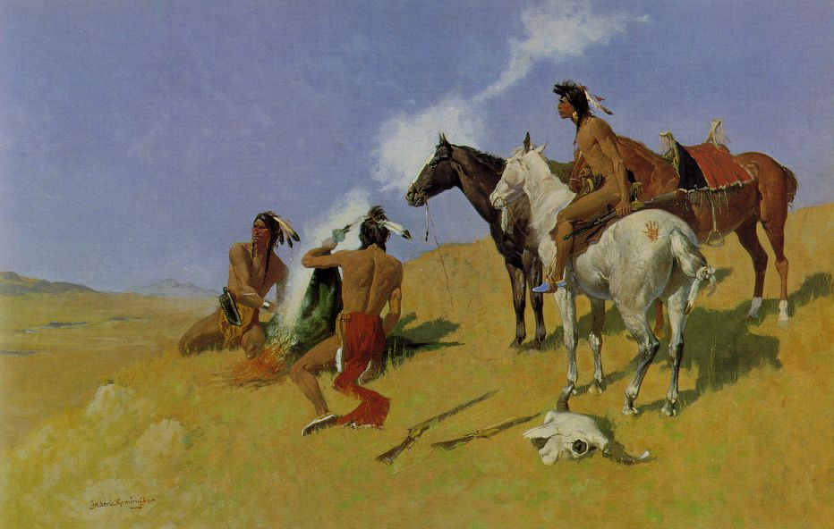
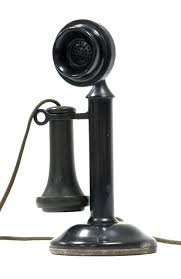
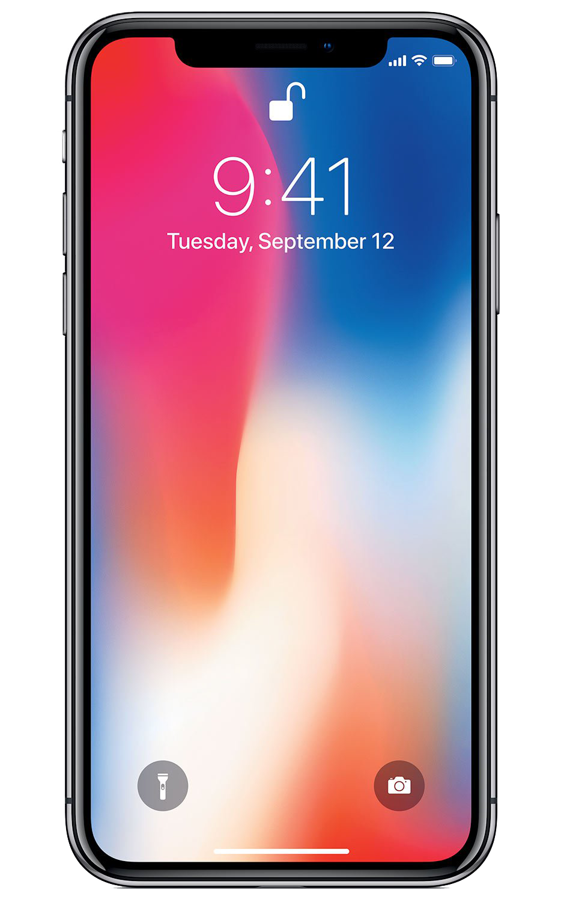

History
The days of corresponding via telephone and letter writing are not that long ago, although in this virtual age such means appear all but antiquated. So, have the “good old days” of pen, ink and voice been outdated? Well, the answer to this is certainly a resounding “yes” in many cultures and business around the world. We now utilise high-speed Internet, fax, VoIP conference calling and the wonders of email. However, are these means truly that much different than the days when we used to scribe letters?
Then
For most of human history, in order to send a message to someone, you needed to physically deliver it. People used to communicate with the help of birds and animals. They used to send letters or messages by training their birds. But birds could only travel so far.
In the 5th century BCE, Persian king Darius the Great built the Royal Road to improve communication throughout his large empire.
 The smoke signal is one of the oldest forms of long-distance communication. It is a form of visual communication used over long distance. In general smoke signals are used to transmit news, signal danger, or gather people to a common area.
 The first long-distance phone call was made by Alexander Graham Bell to his assistant, Thomas Watson, on Aug. 10, 1876, from Brantford to Paris, Ontario. Watson would also receive the first transcontinental phone call in 1915, where Bell said the same thing he said in 1876.
The invention of the communication medium commonly known as radio, although generally attributed to Guglielmo Marconi in the 1890s, spanned many decades, from theoretical underpinnings, through proof of the phenomenon's existence, development of technical means, to its final use in signalling.
Now
One thing happening in today's current society is communication loss. This generation breathes on technology, and without it, mankind will struggle to advance, meaning they would potentially have to start back at square one. Despite that, this statement takes a giant leap in many directions. With this new technology comes new abilities and new things to handle, which can, of course, be a distraction from reality. This generation, though, takes technology distraction to a whole new level. Technology has an enormous impact on today’s society, everywhere you go, there will be technology around. In schools, offices, stores, anywhere. Though this may seem like a good thing, it actually has more hurting qualities then benefiting.
Modern types of communication
- Cellphones
- In addition to basic text messaging and wireless phone conversations, many cell phones enable their users to send and receive email, pictures and recorded videos.
 Skype
Skype- It is a downloadable software that enables users to make free phone calls and send messages via the Internet.
 Instant Messaging
Instant Messaging- It enables users to communicate with each other on the Internet via short written messages.
 Facebook
Facebook- A social media platform where you can make your own profile about yourself and connect with friends or family.
- Users can write (or "tweet") messages from either their computer or cell phone in short, concise updates, as often as they please.
 Email
Email- This technology can be extremely helpful for those who must stay in constant communication with family members, co-workers or other acquaintances without being bound to larger computers or laptops.